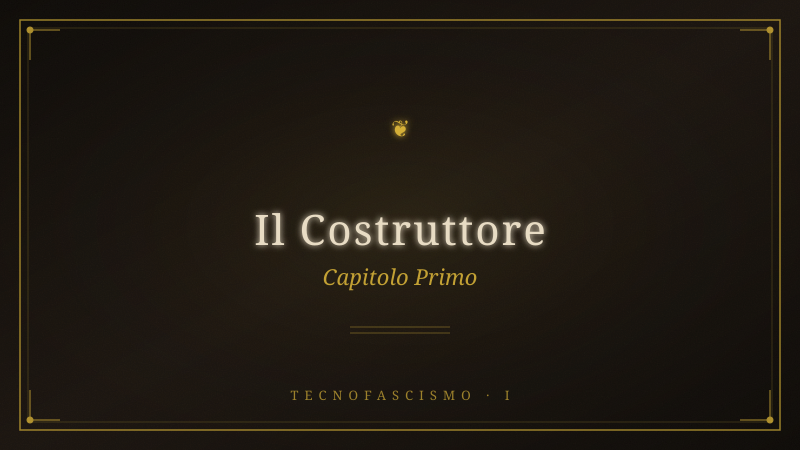

Capitolo 1 — Il Costruttore#

title: CAPITOLO_1_IL_COSTRUTTORE_v7_20260321
area: 03-Technofascismo
source: progetto libro technofascismo/CAPITOLO_1_IL_COSTRUTTORE_v7_20260321.docx
imported: 2026-06-23
type: ricerca-import
Fonte:
progetto libro technofascismo/CAPITOLO_1_IL_COSTRUTTORE_v7_20260321.docx— redatto (IBAN/CF/conto rimossi).
MOVIMENTO I — LE VOCI
CAPITOLO 1
Il Costruttore
I
La Promessa
A Swakopmund, sulla costa atlantica dell’Africa del Sud-Ovest — il territorio che oggi si chiama Namibia ma che nel 1968 era ancora una colonia amministrata dal Sudafrica sotto il regime dell’apartheid — c’era una scuola tedesca con le uniformi, le punizioni corporali, e l’ordine geometrico di un mondo in cui la superiorità razziale non era un’opinione: era la legge. Peter Thiel aveva un anno quando la sua famiglia arrivò dall’Europa — nato a Francoforte sul Meno l’11 ottobre 1967, figlio di un ingegnere chimico che seguiva i contratti dell’industria mineraria nelle colonie dell’Africa australe. Il bambino non scelse dove crescere. Nessun bambino lo sceglie. Ma il luogo in cui cresci diventa il codice sorgente delle strutture che costruirai, e il luogo in cui crebbe Peter Thiel era un sistema dove l’asimmetria tra chi comanda e chi obbedisce non andava giustificata, né nascosta, né discussa: era semplicemente l’architettura del reale. Prima dei dieci anni, Thiel avrà cambiato sette scuole. Il nomadismo coloniale — il padre che insegue i contratti, la famiglia che trasloca tra insediamenti minerari, il figlio che impara a non affezionarsi a nessun luogo — lascia un’impronta che non è ideologica nel senso esplicito del termine. È qualcosa di più profondo: la capacità di costruire sistemi che replicano asimmetrie di potere senza nominarle, perché l’asimmetria è l’ambiente naturale. Non devi convincerti che la gerarchia è giusta se la gerarchia è l’unica cosa che hai conosciuto.
Thiel non è l’unico protagonista di questo libro cresciuto nell’apartheid, e questa non è una coincidenza statistica. Elon Musk nacque a Pretoria nel 1971 — quattro anni dopo Thiel, a millequattrocento chilometri di distanza, nello stesso sistema. Suo padre Errol possedeva una quota in una miniera di smeraldi in Zambia, una delle case più grandi di Pretoria, uno yacht, un aereo, cinque automobili di lusso; i nonni materni, Joshua e Wyn Haldeman, emigrati dal Canada nel 1950, furono descritti dal genero Errol come «fanatici» a favore dell’apartheid e simpatizzanti del nazismo. Elon ha definito il padre «evil» — ma ha replicato la struttura: il padrone che dispone di risorse e persone senza vincoli, che costruisce imperi in cui la sua parola è legge e chi non è d’accordo viene espulso. David Sacks nacque a Città del Capo nel 1972 da famiglia ebraica, padre endocrinologo; i genitori emigrarono negli Stati Uniti nel 1977, «a causa delle crescenti incertezze politiche» — la famiglia non fuggì l’apartheid come vittima ma come beneficiaria che ne vedeva il collasso. Tre bambini dello stesso quinquennio, cresciuti nello stesso sistema di asimmetria codificata, che si ritroveranno a Stanford, a PayPal, e poi nei centri di comando dell’apparato tecnologico-militare americano. La domanda non è se la formazione nell’apartheid li abbia «influenzati» — domanda psicologica, irrisolvibile. La domanda è documentale: cosa hanno costruito, e quale forma ha.
La California arriva dopo il Sudafrica, e arriva attraverso Stanford. Peter Thiel si iscrive a Stanford nel 1985, si laurea in filosofia nel 1989 e consegue il dottorato in giurisprudenza nel 1992. Non è un ingegnere. Non è un hacker. Non scriverà mai una riga di codice in vita sua. È un filosofo politico che ha deciso di diventare architetto del potere, e Stanford è il laboratorio dove la decisione prende forma. Nel 1987 — mentre è ancora studente — fonda con Norman Book la Stanford Review, un giornale conservatore e libertario, in risposta diretta alla decisione dell’università di sostituire il programma «Western Culture» con un corso più inclusivo intitolato «Cultures, Ideas, and Values.» Irving Kristol — spesso definito «il padre del neoconservatorismo» — fornisce guida intellettuale e sostegno finanziario. David Sacks, arrivato dal Sudafrica via Memphis, diventa editor-in-chief della Review dopo Thiel. La rete che la Review genera — circa trecento persone tra ex collaboratori, donatori e lettori che diventeranno dirigenti, investitori e funzionari governativi — è il primo prototipo della struttura che Thiel costruirà per i successivi quarant’anni. Non una cospirazione. Una formazione: persone che condividono un vocabolario, un nemico (il multiculturalismo, la «political correctness», ciò che percepiscono come la dissoluzione dell’ordine occidentale), e un’ambizione.
A Stanford, Thiel incontra René Girard — il teorico franco-americano della violenza mimetica, che insegna nell’ateneo dal 1981. La lezione di Girard è semplice e devastante: i desideri umani non sono originali, sono imitativi; la società funziona attraverso la violenza del capro espiatorio; il cristianesimo è l’unica rivelazione che smaschera questo meccanismo. Thiel assorbe Girard con una precisione che trasforma la diagnosi in prescrizione: se la società funziona attraverso la violenza sacrificale, allora chi controlla il meccanismo del sacrificio controlla la società. Nel 2007, Thiel fonderà Imitatio, un istituto dedicato alla ricerca girardiana — finanziato dalla sua fondazione, gestito con Robert Hamerton-Kelly. In Zero to One (2014) — il libro che condensa la sua filosofia imprenditoriale — non nomina mai Girard, eppure il testo ne è intriso: il terzo capitolo, «All Happy Companies Are Different,» articola il principio «Competition is for Losers» — puro Girard. L’investimento in Facebook nel 2004 — cinquecentomila dollari per il 10,2% — si basa sulla teoria del desiderio mimetico: i social network amplificano l’imitazione, e l’imitazione è il motore del comportamento umano. Girard diagnosticava la malattia. Thiel la brevetta.
Ma Thiel non legge Girard da solo. Lo legge attraverso la lente di Carl Schmitt — il giurista tedesco che teorizzò la distinzione amico/nemico come fondamento della politica e il concetto di katechon — il potere che trattiene l’Anticristo, che mantiene l’ordine contro il caos apocalittico. Il katechon non è il bene. Non pretende di esserlo. È semplicemente ciò che ritarda la fine — la diga che impedisce all’entropia di inghiottire tutto. Per Schmitt — e per il Thiel che legge Schmitt — il liberalismo è entropia, la democrazia è dissoluzione, il pluralismo è debolezza. Il potere autoritario è l’unica diga. La sintesi Girard-Schmitt è il codice sorgente dell’intera operazione che seguirà: la violenza non è un difetto del sistema. È il sistema. E chi la gestisce, governa.
Una precisazione che il rigore esige, e che non è un dettaglio: Thiel è cristiano, non ebreo. Si identifica come «broadly Protestant, somewhat heterodox.» La sua famiglia è di origine tedesca, senza legami documentati con l’ebraismo. Girard e Schmitt sono entrambi pensatori cristiani. Il framework teologico-politico di Thiel è radicato nella tradizione cristiana — non in quella ebraica. Questa distinzione diverrà strutturalmente rilevante più avanti nel libro, quando analizzeremo il meccanismo del dispensazionalismo cristiano: i predicatori come John Hagee che sostengono Israele non per solidarietà con gli ebrei, ma perché la profezia biblica richiede il ritorno degli ebrei in Terra Santa come precondizione per il ritorno di Cristo — un evento che, nella teologia dispensazionalista, include la conversione o la dannazione degli ebrei stessi. I cristiani sionisti amano Israele e usano gli ebrei. Ma questo capitolo non è quel capitolo. Qui piantiamo il seme. Là fiorirà.
Nel 2009, Thiel scrive una frase che condensa l’intero progetto: «Non credo più che libertà e democrazia siano compatibili.» Non è una provocazione da intellettuale annoiato. È una dichiarazione programmatica — il teorema del katechon tradotto in lingua politica americana. Se la democrazia è incompatibile con la libertà — intesa come libertà dell’élite di agire senza il vincolo del consenso popolare — allora la democrazia va superata. Non abolita con un colpo di stato. Resa irrilevante attraverso l’infrastruttura. La tecnologia come strumento per rendere il voto un gesto privo di conseguenze, perché le decisioni che contano sono già state prese altrove — nei server, nei contratti, nei consigli di amministrazione. Questo è il progetto.
II
La Crepa
Il 19 dicembre 2007, il sito Gawker pubblica un articolo intitolato «Peter Thiel is totally gay, people» — rivelando l’omosessualità di Thiel senza il suo consenso. Non è un evento privato. È il momento in cui la contraddizione strutturale che definisce Thiel diventa visibile al mondo, e la sua risposta a questa esposizione rivelerà più della sua psicologia: rivelerà il funzionamento del sistema che ha costruito. La cronologia che segue non è una biografia. È un’anatomia.
Novembre 2008. Un anno dopo l’outing. Thiel dona centomila dollari alla fondazione «Protect Marriage» che sostiene la Proposition 8 in California — la proposta di legge che cerca di vietare i matrimoni omosessuali. Un uomo che è appena stato esposto come gay finanzia il divieto dei matrimoni gay. La reazione istintiva è cercare la spiegazione psicologica: auto-odio, negazione, schizofrenia. Ma la spiegazione psicologica è quella sbagliata. Thiel non odia se stesso. Thiel ha una teoria del potere in cui la libertà personale è un privilegio dell’élite — di chi possiede il capitale, la tecnologia, l’informazione sufficiente a trascendere le regole che valgono per tutti gli altri. La sua omosessualità non è una contraddizione con le sue posizioni conservatrici. È la loro dimostrazione: Thiel può essere gay e finanziare chi perseguita i gay perché è sufficientemente ricco e potente da non subire le conseguenze della persecuzione che finanzia. I diritti dei gay ordinari minacciano l’ordine tradizionale — famiglia, religione, gerarchia — che serve al sistema come meccanismo di controllo. Thiel non ha bisogno di quel meccanismo per sé. Ha bisogno che funzioni per gli altri.
Luglio 2016. La Convention Nazionale Repubblicana. Thiel sale sul palco e pronuncia una frase che nessuno aveva mai detto in quel contesto: «Sono orgoglioso di essere gay. Sono orgoglioso di essere repubblicano. Ma soprattutto, sono orgoglioso di essere americano.» Il pubblico applaude. Non è un atto di coraggio: è un atto di potere. Thiel non chiede accettazione. Dimostra che il suo denaro e la sua rete lo hanno reso intoccabile, al punto da poter dichiarare la propria omosessualità davanti al partito che storicamente la perseguita, e ricevere applausi invece che fischi. L’anno dopo, nell’ottobre 2017, sposerà Matt Danzeisen a Vienna, per il suo cinquantesimo compleanno. Avranno due figlie via surrogacy — lui che per anni aveva dichiarato di credere che i figli avessero bisogno di una madre e di un padre, e che pertanto avesse scelto di non avere figli. Poi ha cambiato idea. Non perché sia cambiata la sua visione della famiglia. Perché è cambiata la scala del suo potere: quando sei sufficientemente ricco, puoi creare la famiglia che vuoi senza dover difendere il diritto degli altri a fare lo stesso.
La vendetta arriva prima del matrimonio. Nel 2016, mentre si prepara per la Convention Repubblicana, Thiel finanzia segretamente la causa legale di Hulk Hogan — il wrestler il cui vero nome è Terry Bollea — contro Gawker, che ha pubblicato il sex tape di Hogan, non di Thiel. Thiel investe circa dieci milioni di dollari nella causa. La giuria assegna centoquaranta milioni. Gawker dichiara bancarotta e chiude. La storia viene raccontata come la vendetta di un uomo offeso. Ma non è una storia di privacy. È una storia di potere: un singolo miliardario, finanziando una causa legale di terzi, può eliminare un organo di informazione. La libertà di stampa non muore per censura governativa. Muore per bancarotta indotta. Girard avrebbe riconosciuto il meccanismo: Gawker diventa il capro espiatorio — la vittima sacrificale che restaura l’ordine violato. Ma non l’ordine della privacy. L’ordine del potere: nessuno tocca chi è al vertice.
Ancora prima — nel 1995, quand’erano entrambi appena usciti da Stanford — Thiel e Sacks avevano co-scritto The Diversity Myth: Multiculturalism and Political Intolerance on Campus. Il titolo dice già tutto: la diversità è un mito, il multiculturalismo è intolleranza. Due uomini con identità vulnerabili — Thiel gay, Sacks ebreo sudafricano bullizzato a Memphis per il suo accento straniero — scelgono come primo gesto intellettuale in America non la critica dell’ingiustizia razziale, non la solidarietà con altri vulnerabili, ma la critica della diversità. Il pattern è già visibile, e sarà il pattern di tutto questo libro: la vulnerabilità identitaria non genera empatia verso altri vulnerabili. Genera la volontà di non essere mai più vulnerabili. E questa volontà si traduce in accumulo di potere sufficiente a trascendere la contraddizione personalmente. Il paradosso non viene risolto. Viene monetizzato.
Il percorso verso la prima macchina passa attraverso una stanza quasi vuota. Nel 1998, in una sala conferenze del Terman building di Stanford, si tiene una lezione sui mercati valutari. I partecipanti sono sei. Uno di loro è Max Levchin, ventitreenne ucraino emigrato negli Stati Uniti, appena arrivato in Silicon Valley, con un’ossessione per la crittografia e nessun capitale. Dopo la lezione si avvicina a Thiel — che ha trent’anni, il dottorato in legge, esperienza nella finanza derivativa — e gli dice: «Ciao, sono Max. Sono in Silicon Valley da cinque giorni e sto per fondare un’azienda.» Thiel risponde che il suo hedge fund potrebbe investire qualche centinaio di migliaia di dollari. Levchin propone una libreria di schemi crittografici da commercializzare. Thiel trova l’idea «interessante.» Ma dopo aver iniziato a lavorare sulla crittografia pura, scoprono che non esiste una domanda intrinseca. È Thiel a suggerire l’idea che cambierà tutto: non crittografare dati. Crittografare denaro. Conservare valore digitale su dispositivi mobili. Nel dicembre 1998, Thiel, Levchin e Luke Nosek fondano Confinity — pagamenti crittografati per PalmPilot.
A un chilometro di distanza, Elon Musk — il ragazzo di Pretoria — fonda X.com nel marzo 1999: una banca online con ambizioni simili. Le due aziende si fondono nel marzo 2000. La fusione è turbolenta, Musk viene estromesso dalla carica di CEO in un colpo interno orchestrato da Thiel e Levchin; l’azienda viene rinominata PayPal nel 2001. Ma la turbolenza è irrilevante rispetto a ciò che nasce dal laboratorio di PayPal. Il sistema antifrode — chiamato internamente «Igor» — è il primo sistema su larga scala di pattern matching applicato alle transazioni finanziarie online. Non regole esplicite («se l’importo supera x, blocca»). Apprendimento supervisionato: l’algoritmo osserva milioni di transazioni, alcune marcate come frode, altre come legittime, e impara a tracciare i confini invisibili tra il permesso e il vietato. Ogni utente ha un risk score — un numero che decide, senza appello e senza trasparenza, chi può transare e chi no. Il codice decide. Non la legge, non il giudice, non il cittadino. Il codice. È il prototipo esatto della macchina che verrà.
eBay acquisisce PayPal nell’ottobre 2002 per un miliardo e mezzo di dollari. Thiel, come maggiore azionista individuale con il 3,7%, ne esce con circa cinquantacinque milioni. Ma il vero prodotto di PayPal non è il denaro. È la rete. La PayPal Mafia — il nome che Fortune darà nel 2007 al gruppo di co-fondatori e primi dipendenti — è il più potente network della storia della tecnologia americana. Musk costruirà Tesla, SpaceX, comprerà Twitter, e nel 2025 guiderà il DOGE — lo smantellamento sistematico delle agenzie federali americane. Sacks diventerà AI Czar della Casa Bianca. Reid Hoffman fonderà LinkedIn. Keith Rabois — investitore a Khosla Ventures, membro della Mafia — sposerà Jacob Helberg, che diventerà Sottosegretario di Stato. Roelof Botha diventerà managing partner di Sequoia Capital. Max Levchin fonderà Affirm. In un garage di Palo Alto, nel 1999, si è formata la classe dirigente che un quarto di secolo dopo controllerà pezzi dello Stato americano. Non una cospirazione: un network. La differenza è che la cospirazione ha bisogno del segreto. Il network ha bisogno solo degli incentivi allineati.
III
Il Paradosso
Nel 2003 — due anni dopo l’11 settembre, mentre gli Stati Uniti costruiscono l’architettura della sorveglianza globale — la CIA cerca startup in grado di analizzare dati di intelligence. In-Q-Tel, il fondo di venture capital dell’agenzia, investe due milioni di dollari in una nuova società fondata da cinque persone: Peter Thiel (il capitale e la visione), Alex Karp (il CEO), Joe Lonsdale, Stephen Cohen e Nathan Gettings — questi ultimi tre ingegneri, Gettings proveniente da PayPal, Lonsdale e Cohen studenti di Stanford. Il nome della società è una dichiarazione d’intenti mascherata da omaggio letterario: Palantir, dalla palantír di Tolkien — le pietre veggenti del Signore degli Anelli, dal quenya «coloro che guardano da lontano.» Gli uffici prendono nomi tolkieniani: The Shire a Palo Alto, Rivendell a McLean in Virginia — dove ha sede la CIA — e Minas Tirith a Washington. Ma nel romanzo di Tolkien, la palantír è uno strumento pericoloso: Sauron la usa per corrompere Saruman, il mago che doveva proteggere il mondo e che diventa lo strumento del suo dominio. Thiel conosceva Tolkien abbastanza da scegliere quel nome. Non conosceva Tolkien abbastanza da prenderne l’avvertimento. O forse lo conosceva benissimo.
Alex Karp è il co-fondatore più improbabile, e la sua storia è la contraddizione formativa più devastante dell’intero cast di questo libro. Nato a New York il 2 ottobre 1967 — lo stesso anno di Thiel, a seimila chilometri di distanza, in un mondo completamente diverso. Padre: Robert Joseph Karp, pediatra, di discendenza ebraica. Madre: Leah Jaynes Karp, artista afroamericana. Genitori hippie che portavano il figlio alle proteste per i diritti civili e del lavoro. Biracial in un’America in cui essere biracial significava non appartenere a nessun gruppo; dislessico in un sistema scolastico che non sapeva cosa farsene dei dislessici; vulnerabile in ogni ambiente, con un’ansia per questa vulnerabilità che, secondo le sue stesse parole, non lo ha mai lasciato. Dalla madre ha ereditato «una forte affinità con la lotta alla discriminazione.» Ha dichiarato: «Alcuni neri mi consideravano nero mentre altri no. Io mi considero me.» Karp non ha il privilegio coloniale di Thiel, Musk o Sacks. Ha il privilegio intellettuale: Haverford College — un piccolo ateneo quacchero nella periferia di Philadelphia, con una tradizione pacifista e un’etica della nonviolenza — poi Stanford Law School.
A Stanford Law, Karp incontra Thiel, e nasce l’amicizia più paradossale della Silicon Valley. Karp si considera socialista. Thiel è già una figura nota del libertarismo stanfordiano. Si legano per esasperazione comune verso la facoltà di legge e per passione per il dibattito politico. «Lui era più il socialista, io più il capitalista», ricorda Thiel. «Parlava sempre di teorie marxiste sul lavoro alienato.» Si insultano sulle rispettive ideologie. Diventano inseparabili. L’amicizia sopravvive a ogni divergenza per trent’anni — e la sua sopravvivenza è la prima crepa nel mito delle ideologie: quando il potere chiama, socialisti e capitalisti si siedono allo stesso tavolo. Girard lo chiamerebbe rivalità mimetica risolta: i due avversari scoprono che il vero nemico è altrove.
Dopo Stanford, Karp va a Francoforte. La Goethe Universität — la tradizione di Theodor Adorno, di Max Horkheimer, di Jürgen Habermas. La Scuola di Francoforte: il luogo intellettuale che ha diagnosticato, con la Dialettica dell’Illuminismo, come la ragione strumentale si trasforma in strumento di dominio; che ha analizzato, con La personalità autoritaria, le strutture psicologiche del fascismo; che ha insegnato, generazione dopo generazione, che il compito dell’intellettuale è smontare i meccanismi del potere, non servirli. È ampiamente riportato che Karp avesse inteso studiare con Habermas; le fonti indicano che «ebbero una sorta di separazione» i cui motivi restano opachi. Completa il dottorato nel 2002 sotto la supervisione di Karola Brede e Hans-Joachim Busch. La dissertazione si intitola Aggression in der Lebenswelt — «L’aggressione nel mondo della vita»: una reinterpretazione sistematica del Jargon dell’autenticità di Adorno. Analizza come l’aggressione è una forza costitutiva dell’identità sociale, come il «gergo» — il linguaggio che pretende autenticità — integra gli impulsi aggressivi nella vita sociale mantenendo una coesione di superficie. L’aggressione, in altre parole, non è il contrario dell’ordine. È ciò che lo tiene insieme.
Adorno scrisse che l’azionismo è regressivo — che l’impulso a «fare qualcosa» senza riflessione critica conduce esattamente dove la riflessione critica avrebbe impedito di andare. Karp si stancò di leggere e scrivere. Volle «fare qualcosa nel mondo reale.» Thiel lo chiamò. Il socialista e il libertario, riuniti: il primo avrebbe gestito la macchina, il secondo l’avrebbe finanziata. La scelta di Karp come CEO non fu casuale. Come osservò un analista: avere un socialista dichiarato alla guida di un’azienda di sorveglianza finanziata dalla CIA dava l’impressione che l’azienda potesse essere degna di fiducia. La contraddizione non era un difetto. Era il prodotto.
L’identità ebraica di Karp non è un dettaglio biografico. È una dimensione operativa della sua traiettoria. Karp si identifica come ebreo. Nel settembre 2025, riceve il Chabad Lamplighter Award a Washington — un riconoscimento della comunità ebraica ultraortodossa. Dopo il 7 ottobre 2023, porta l’intero consiglio di amministrazione di Palantir a Tel Aviv. Firma una partnership strategica con le Forze di Difesa Israeliane. Definisce le proteste pro-palestinesi nei campus universitari americani «una religione pagana — una religione pagana della mediocrità, della discriminazione, dell’intolleranza e della violenza.» Palantir riserva centoottanta posizioni per laureati ebrei, citando l’antisemitismo nei campus. Il figlio del pediatra ebreo e dell’artista nera, cresciuto nella vulnerabilità biraciale, formatosi nella tradizione critica che smontava il fascismo, non reagisce alla vulnerabilità con l’empatia per altri vulnerabili. Reagisce con il potere. Porta il board a Tel Aviv non come gesto di solidarietà emotiva, ma come atto di posizionamento strategico: Palantir diventa fornitore dell’IDF, e la difesa di Israele diventa la difesa di Palantir. L’identità è il veicolo. Il contratto è la destinazione.
«La nostra missione è rendere l’America e i suoi alleati più letali.» Sono le parole di Karp, non le nostre. Il figlio dei manifestanti per i diritti civili, formato nella tradizione che diagnosticava il fascismo, costruisce la macchina di sorveglianza e targeting militare più avanzata della storia. Gotham — la piattaforma di Palantir per l’intelligence — non è un database. È una macchina di pattern matching che connette banche dati separate: sensori, intercettazioni, transazioni bancarie, registri di volo, comunicazioni. Non domanda «chi è il criminale?» Domanda «quali pattern di comportamento somigliano ai pattern dei criminali che conosciamo?» L’analogia computazionale diventa verità operativa: se assomigli al nemico, sei il nemico. Lo stesso meccanismo che a PayPal decideva chi poteva transare — il risk score invisibile, la decisione senza appello — a Gotham decide chi può vivere.
Nel 2017, un’inchiesta di The Intercept basata sui documenti di Edward Snowden — trapelati nel giugno 2013 — rivelò che Palantir aveva collaborato con la National Security Agency nel programma XKEYSCORE, il sistema di sorveglianza globale delle comunicazioni internet più vasto mai costruito. Palantir non cattura il traffico. Palantir lo analizza. Insegna al sistema a riconoscere il nemico non attraverso parole chiave ma attraverso analisi relazionale: chi conosce chi, quali geometrie sociali indicano la minaccia. L’algoritmo — il secondo filo del nostro prisma — non è uno strumento neutro. È l’infrastruttura del potere sovrano: decide chi è amico e chi è nemico, nel senso esatto in cui Schmitt — il maestro che Thiel ha letto — usava questi termini.
I numeri raccontano la scala. Nel 2009, i contratti federali di Palantir con il governo americano ammontavano a 4,4 milioni di dollari. Nel 2025: 970,5 milioni. La capitalizzazione di mercato, a marzo 2026, è di 365,37 miliardi di dollari — una delle aziende di software più preziose del mondo. Il contratto Maven — l’Algorithmic Warfare Cross-Functional Team, istituito dal Pentagono nell’aprile 2017 — vale 1,3 miliardi di dollari. Maven sostituisce nove sistemi del Dipartimento della Difesa e comprime la kill chain — il ciclo tra identificazione del bersaglio e esecuzione della morte — da ore a minuti. Un contratto decennale con l’esercito americano per software e analisi dati vale dieci miliardi. Nelle prime ventiquattro ore dell’Operazione Epic Fury, il 28 febbraio 2026, le forze alleate hanno colpito mille obiettivi: una scala operativa che, come ha dichiarato il Pentagono, non sarebbe stata possibile senza intelligenza artificiale. Il bambino di Swakopmund ha costruito una finestra attraverso cui il mondo intero viene osservato. Ma non è una finestra che si può guardare dall’altra parte.
IV
La Rete
Nel 2005, Thiel fonda Founders Fund con il capitale derivante dai guadagni PayPal. Il nome suggerisce ciò che è: un fondo che investe nei fondatori, non nei mercati. Il portafoglio copre i domini della macchina: Palantir (sorveglianza e intelligence), SpaceX (infrastruttura spaziale), Anduril (droni e armi autonome), Stripe (pagamenti globali), Airbnb (logistica). Non è un fondo di venture capital nel senso tradizionale. È la struttura che converte il denaro privato in influenza geopolitica. Il denaro — il terzo filo del prisma — non serve a comprare prodotti. Serve a comprare potere.
Nel 2016, Thiel dona 1,25 milioni di dollari alla campagna presidenziale di Donald Trump — il primo endorsement pubblico di un magnate della Silicon Valley, che rompe il consenso liberal della Valley e crea una frattura permanente. Nel 2022, canalizza circa quindici milioni verso JD Vance — candidato senatoriale in Ohio, avvocato di Yale, autore di Hillbilly Elegy, convertito al cattolicesimo nell’orbita di Thiel — e venti milioni verso Blake Masters in Arizona. Nel corso della sua vita politica, Thiel ha versato approssimativamente cinquanta milioni di dollari in donazioni accumulate verso candidati e cause di destra. La catena è documentabile: denaro Thiel → campagna Vance → vittoria senatoriale → Vice Presidenza. Denaro Thiel → David Sacks → AI Czar alla Casa Bianca. Denaro Thiel → Jacob Helberg → Sottosegretario di Stato. Non serve un complotto. Servono incentivi allineati, infrastrutture complementari, e l’assenza di contrappesi istituzionali sufficienti. Thiel non ha comprato il governo. Ha finanziato le persone giuste al momento giusto, e il sistema ha fatto il resto.
E poi c’è il corpo. Il corpo come sottotraccia — il quarto filo del prisma che in questo capitolo fa la sua prima, silenziosa apparizione. Nel gennaio 2025, Pete Hegseth viene confermato Segretario della Difesa degli Stati Uniti — veterano dell’esercito, conduttore di Fox News, autore di The War on Warriors, promotore di una visione militare cristiano-fondamentalista dell’America. Ma questo capitolo non racconta Hegseth. Questo capitolo racconta solo un’immagine: sul suo corpo sono incisi dei tatuaggi. Una croce di Gerusalemme. La scritta «Deus Vult.» È tutto. Per ora. L’immagine resta nel lettore come un seme piantato nel buio. Cosa significa «Deus Vult» tatuato sul corpo dell’uomo che comanda le forze armate americane? Questo capitolo non risponde. Il capitolo che risponderà non è ancora arrivato.
Nella terza settimana di marzo 2026 — mentre queste pagine vengono scritte — Roma ospita una serie di conferenze organizzate dall’Associazione Culturale Vincenzo Gioberti, un’organizzazione che propone la «restaurazione del cattolicesimo come pietra angolare dell’identità nazionale.» L’incontro raccoglie esponenti della nouvelle droite europea e rappresentanti di think tank americani nell’orbita di Thiel. Contemporaneamente, a Washington, il Cluny Project — un’iniziativa incubata presso la Catholic University of America, da essa distanziata ufficialmente — produce ricerca su «medieval governance models» come alternative alla democrazia liberale. I filosofi incontrano i costruttori. Le idee incontrano i contratti. Girard, Schmitt, Tolkien, il katechon — il vocabolario del primo capitolo di questo libro — si materializza in conferenze, donazioni, software, nomine. Non è una metafora. È un’infrastruttura.
I fili si toccano per la prima volta, ma il lettore non deve ancora capire che sono la stessa storia. Il potere — Thiel, la Stanford Review, le nomine, la rete. L’algoritmo — Igor, Gotham, XKEYSCORE, il risk score che decide chi vive. La profezia — il katechon, Girard, Schmitt, Roma. Il corpo — i tatuaggi di Hegseth, i corpi che cadranno sotto i missili guidati dalla macchina. Il denaro — cinquantacinque milioni di PayPal, cinquanta milioni in donazioni politiche, 365 miliardi di capitalizzazione. La macchina da guerra — Palantir, Maven, la kill chain compressa. Sei fili che nel Movimento I sono ancora separati, ancora freddi, ancora presentati come voci distinte. Nei capitoli che vengono — l’algoritmo di Zuckerberg che diventa arma di radicalizzazione, la profezia di Hagee che diventa politica estera, il cervello del teenager che si spegne, il denaro di Adelson che compra la guerra — i fili si avvicineranno, si toccheranno, si fonderanno. Fino alla collisione.
Peter Thiel è il costruttore consapevole. Non è un imprenditore che ha avuto successo accidentalmente. Non è un filosofo isolato le cui idee sono state malinterpretate. È un architetto che ha costruito, pezzo dopo pezzo, ogni elemento della macchina: il capitale (PayPal → Founders Fund), l’infrastruttura algoritmica-militare (Palantir → Maven → kill chain), l’apparato politico (Vance, Sacks, Helberg, Masters, Trump), e la giustificazione teologico-filosofica (Girard, Schmitt, il katechon). Alex Karp è il paradosso incarnato: il figlio dei diritti civili che firma i contratti per la macchina da guerra, l’allievo di Adorno che rende l’America più letale. La crepa nel mito — l’uomo gay che finanzia l’oppressione dei diritti LGBT, il socialista che costruisce il panopticon — non è un’eccezione. È la conferma: il potere non ha coerenza morale. Ha solo coerenza di dominio.
La domanda non è più come abbiamo permesso che succedesse. La domanda è cosa facciamo adesso che la macchina è in movimento, adesso che è quotata a 365 miliardi, adesso che il Segretario della Difesa porta tatuaggi che questo capitolo non ha ancora spiegato, adesso che i filosofi di Roma incontrano i costruttori di armi di Palo Alto.
Il Costruttore ha costruito. La macchina funziona.
NOTA METODOLOGICA
Questo capitolo utilizza il metodo della ricerca profonda (DeepSearch): ogni dato numerico, ogni data, ogni attribuzione è verificata attraverso fonti primarie — filings SEC, records FEC, contratti DoD, documenti resi pubblici dal governo, court filings, dichiarazioni dirette. Le teorie (Girard, Schmitt, Adorno) sono lette direttamente dai testi originali; le fonti secondarie sono indicate dove pertinenti. Le connessioni tra Thiel, Karp, Palantir e il potere politico sono costruite attraverso analisi documentale di flussi finanziari, contratti governativi e reti di nomine. Le identità — religiosa, etnica, sessuale — sono riportate come dati biografici documentati, nel rispetto del protocollo SCUDO che distingue individui da categorie: criticare le azioni di un individuo non è attribuire quelle azioni alla sua identità. Il paradosso non è risolto in questo capitolo. È identificato. È il compito dei capitoli successivi analizzare come funziona.